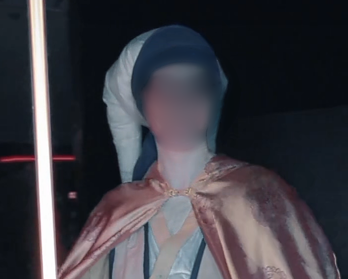

This website is a beta-version and subject to change.
This is the static version of this site. To view dynamic pages, go to the GitHub repository linked in Projects, and view the source code under the branch "main".
Oh, boy, here we go....
I know the home page had a lot about me already, but I'm a person, and thus, very multifaceted. So here's a better idea of who I am as a person.
Quick facts about me!
- I'm adopted - from Russia! I am a US citizen, and would not need any visa, sponsership, to be clear. Just a cool fact about me!
- I like to sing, and I think I'm not half bad. Opinions might vary.
- I like to write, I don't know if that's obvious though....
- My dad taught me to be fluent in the language of sarcasm, but I don't know if I'm very good at it...;)
- When I was younger, I kind of wanted to be a writer. It's on my bucket list still.
- I started teaching myself HTML and CSS when I was in high school, specifically when I was on summer break and vacationing in a cabin in the mountains.
What am I like as a person?
Hard working, dedicated....I mean, yes, I am, but those are dime a dozen as descriptors and I'm trying to seem interesting here. I'm definitely down to be friendly, even if sometimes it takes a minute to get the dynamics of a conversation sorted. In tech, a lot of us can relate to that, I'd say, right? I do, however, take care to ensure I'm able to maintain good working relationships with people, be polite and kind, and do my best to be professional. I could be a genius with Java, but if I'm abrasive, it won't be enjoyable to work with me, and those soft-skills are valuable.
I will say this as an indicator of my interpersonal skills and relationships - at my last position, I started as cashier, and worked up to General Manager. I didn't do it by shoving my way up and pushing people down - in fact, I didn't even aim to take that role to begin with. Circumstances just occured that put me in the position to be the best suited to take over when the previous manager left, and I cared too much about my place of work and my coworkers to turn down the role. My coworkers deserved to work in a place they enjoyed, and it be run by someone that was willing to do the neccesary work while not thinking of themselves as better than the people under them. I always viewed that role as a position of service - to them, to our customers. The manager who trained me lived that out at work, and I was determined to live up to her standards even after she left.
I would bring that same drive, dedication and humility to any role I fufill. I might be the person on the job, but that never means I am "better" than anyone else - I'm always able to learn, and I'm always willing to try something new if it'll help finish whatever we're working on, whether that's an issue with a computer to be fixed or a new piece of software to develop. I made a slight joke abot it a minute ago, but I was raised to do my best and put my full effort to whatever I'm doing, and that's something that has served me well in previous experiences and for a long time in the future.
Enough about work personality....what about me as a person outside of work?
Enthusiastic, fun, and friendly especially once I feel comfortable (not at the expense of responsibilities, though!). I'm not always a social butterfly, but in the right enviroments I love to make friends, go out with friends and generally have a good time. I'm a long-time attendee of DragonCon, down in Atlanta, Georgia, maybe you've heard of this local convention... that has over 70k attendee's anually?
Yes, that is me in that picture! And yes, I did make that outfit (mostly. I have yet to make pants, or shoes, but I might be able to tackle pants here - the headpiece in the picture above, ironically, helped get the "how" of how to make pants click, of all things), and I've made a few other cosplay outfits too. I started, back in my early teens, with a run to the local Goodwill and what I had in my closet for my first outfit, and now, I'm planning on making a full Mandalorian suit sometime in the next few years. The goal is before next DragonCon, but I'm not going to beat myself up if it doesn't happen. Real life comes first.
Cosplay - and conventions and fandom as a whole - has been an important part of my life, and has impacted me significantly enough to where I easily credit it to at least part of the reason I was able to develop of my stregnths as a person. I wouldn't be as good of a writer as I can be without having done some fandom-related writing, and I wouldn't be anywhere near as socialable if I hadn't been able to attend conventions with other just as nerdy people as me, get comfortable and then branch out from there. The commitment I have to finishing things is in part, due to my commitment to finishing my cosplays. Maybe a smaller part than how I was raised, but developing the patience, ethic and pacing of work and rest to not burn out is something I have easily improved as part of working on cosplays.
I'm also a part of local community servers online as a result of being in fandom servers, one for state weather, one for tropical, one for local events, one even for local developers and other folks in tech-related positions. I have made many friends as a part of fandom communities and their impact on my life and what I've chosen to do as a career can't be overlooked.
Huh. That's pretty cool. Does your life revolve around that though?
Nope! Coplay, fandom, nerdy interests as a whole aren't the only thing that have shaped who I am as a person. It was because of fandom I got into it, but I do video editing for fun as well, and maybe one day I'll actually try and get a movie produced. I have an idea for one, and have written half of three different versins of a script, but I've had other things to focus on first, and that's going to stay in the back seat until I can actually allocate time and resoures to it without causing issues.
Moreso when I was younger, though I do hope to go back to doing it someday, I figure skate. I've competed a couple times, won 1st and second place respectively, and it's something I really enjoy (and to some extent, have a natural talent at). I suspect some of that talent and draw is related to the whole "adopted from a very cold country", but I don't have proof, haha. Just a fun theory. I started when I was maybe 5 or 6, started doing it more seriously around the age of 11 up to around 17, 18, when high school and college ended up needing my attention more.
I know I mentioned it earlier, and it's honestly all over this website, but weather is another big interest and hobby of mine. I'm going to be taking the 2 hour course in late October that the National Weather Service runs every so often and become SKYWARN certified. Being able to be a storm spotter is something I'm incredibly interested in, and I'm glad they offer that. It's a virtual class that I'll be attending, and I'm really excited about finally being able to take it.
I do go storm chasing when I can, which has been easier since my last place of work was unfortunately closed down. I don't chase tornados, at least not now, and I wouldn't want to chase those in Georgia. I do, however, go after storms with a lot of lightning. My home sceen on my desktop is set to the picture on the weather page with the incredibly clear bolt coming down from a cloud. I was thrilled to find that looking back at my pictures from that chase.
I also am an artist. I've done both physical and digital pieces, mostly of various fandom-related subjects, but my grandma has a picture I made for her, and my dad has some gifts from me as well. I don't have anything posted on this site of it right now, but maybe I'll add it later on.